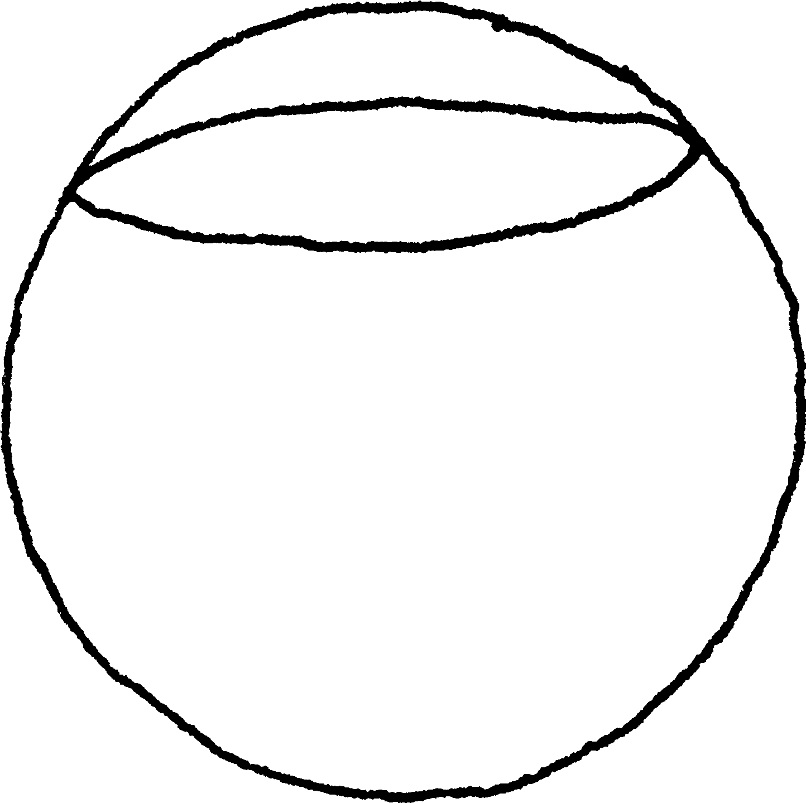
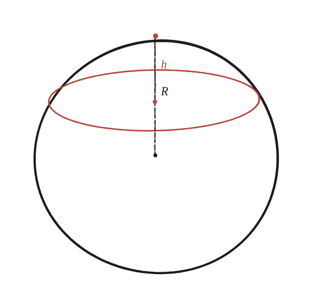

Quins són el volum i l'àrea de la superfície d'un casquet esfèric?

Què hem de produir
Dues fórmules, en termes del radi de l'esfera R i de l'alçada del casquet h —h és la distància des del "cim" del casquet fins al pla de tall, no és el mateix que R: quan h=R, el casquet és exactament la semiesfera ja mesurada abans.
Comença pel cas que ja se sap
Quan h=R, el casquet és la semiesfera. El seu volum ja es va trobar comparant-la, per Cavalieri, amb un cilindre menys un con. Aquesta mateixa comparació, feta a qualsevol alçada de tall —no només a l'equador— és la clau per al cas general.

Tancar-ho
A cada alçada dins del casquet, la secció del casquet (un cercle) i la secció del cilindre-menys-con auxiliar tenen la mateixa àrea —el mateix argument ja fet servir per a la semiesfera, aplicat entre 0 i h en lloc d'entre 0 i R. Per Cavalieri, doncs, el casquet té el mateix volum que aquell tros de cilindre-menys-con: un cilindre de radi R i alçada h, menys el tronc de con que hi queda a dins.
Val la pena fer la resta, que és curta i és on es veu d'on surt la fórmula. El tronc té alçada h i radis R−h a baix i R a dalt. La fórmula del tronc de la Qüestió 48 era per a base quadrada; amb base circular té la mateixa forma amb un π al davant, (πh/3)(a²+ab+b²). Amb a = R−h i b = R:
(πh/3)[(R−h)² + (R−h)R + R²] = (πh/3)[3R² − 3Rh + h²]
i restant-ho del cilindre, πR²h:
V = πR²h − (πh/3)(3R² − 3Rh + h²) = πh[R² − R² + Rh − h²/3] = πh²(R − h/3) = (πh²/3)(3R − h)
Els R² es cancel·len sols, que és el senyal que el càlcul va bé.
El volum d'un casquet esfèric d'alçada h en una esfera de radi R és (πh²/3)(3R−h), que surt de restar un tronc de con a un cilindre de radi R i alçada h. L'àrea de la superfície corba (sense la base plana) és 2πRh —un teorema d'Arquimedes que aquí es dona, no es demostra.
Comprovació
R=2, h=1: V=(πh²/3)(3R−h)=(π/3)(6−1)=5π/3≈5,24. Quan h=R=2 es recupera el volum de la semiesfera, (2/3)πR³=16π/3≈16,76. Superfície corba (sense la base): 2πRh=4π≈12,57.
Dos avisos d'honestedat. El primer: que "sumar" àrees de seccions infinitament primes doni exactament un volum és el pas que el càlcul integral formalitza, i és fora de l'abast d'aquest recull —el mateix tipus de frontera que ja apareix en trobar el perímetre d'una regió formada per un bastó en moviment. El segon, que convé no passar per alt: tot l'argument de Cavalieri dona el volum, i no diu res de la superfície. La fórmula 2πRh és certa i és un teorema d'Arquimedes —projectant el casquet horitzontalment sobre el cilindre que envolta l'esfera, l'àrea es conserva exactament, cosa gens evident—, però aquí es dona sense demostrar. El que sí que queda completament establert és l'argument de Cavalieri: dues figures amb la mateixa secció a cada alçada tenen el mateix volum.